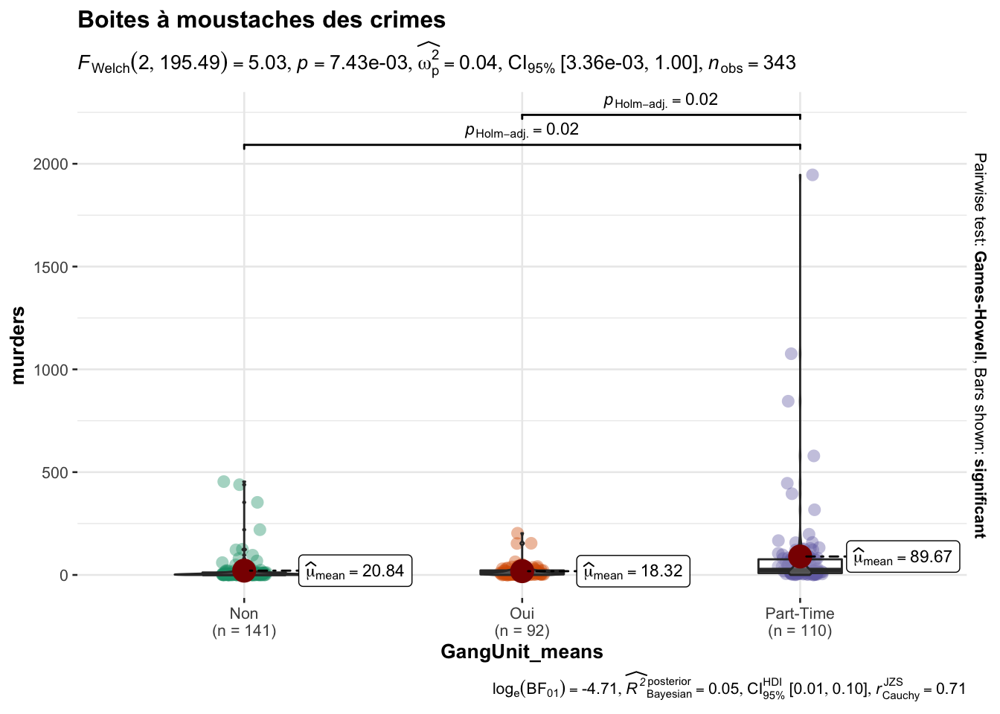

3 L’analyse de la variance
Dans cette section on va s’intéresser aux meurtres commis par unité de gang déployé gangUnit. Pour cette dernière, l’encodage est le suivant : 0 signifie “Meaning”, 10 signifie “Oui” et 5 signifie temps partiel(“Part-Time”).
Sélection des données
On va sélectionner les données qui serviront l’ANOVA puis ajjouter une nouvelle collonne pour le décodage de gangUnit.
library(dplyr)
aov_data = Communities %>% select(murders,gangUnit) %>%
mutate(GangUnit_means = case_when(gangUnit=="0"~"Non",
gangUnit=="10"~"Oui",
gangUnit=="5"~"Part-Time",
gangUnit=="?"~NA_character_))Les boites à moustaches
Le premier travail à faire lors d’une ANOVA est la représentation des boites à moustaches. Nous allons utliser le packages ggstatsplot3 qui donne une sortie avec plusieurs informations.
library(ggstatsplot)## You can cite this package as:
## Patil, I. (2021). Visualizations with statistical details: The 'ggstatsplot' approach.
## Journal of Open Source Software, 6(61), 3167, doi:10.21105/joss.03167ggbetweenstats(
data = aov_data,
x = GangUnit_means,
y = murders,
title = "Boites à moustaches des crimes"
)
Dû à des valeurs manquantes, notre représentation porte sur \(343\) observations. Les boites à moustache indiquent qu’en moyenne, le nombre de meurtres varie lors que gangUnit change de modalité. Passons à l’anova pour en savoir plus.
Application de l’anova à un facteur
Le logiciel R nous permet de faire l’analyse de la variance grâce à la fonction \(aov()\).
murders_aov = aov(murders~GangUnit_means,data = aov_data)
summary(murders_aov)## Df Sum Sq Mean Sq F value Pr(>F)
## GangUnit_means 2 364694 182347 9.377 0.000109 ***
## Residuals 340 6611431 19445
## ---
## Signif. codes: 0 '***' 0.001 '**' 0.01 '*' 0.05 '.' 0.1 ' ' 1
## 1872 observations deleted due to missingnessComme le laissaient paraître les boxplots, d’après le tableau précédent, la \(p-value=0.000109<\alpha=5\%\), alors l’effet de gang(gangUnit) sur le nombre de crimes est significatif.